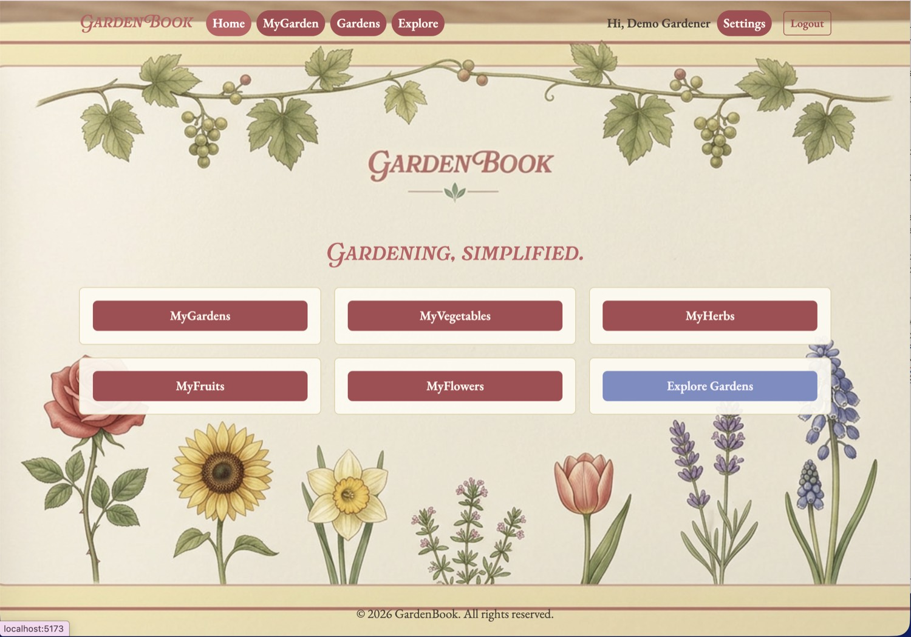
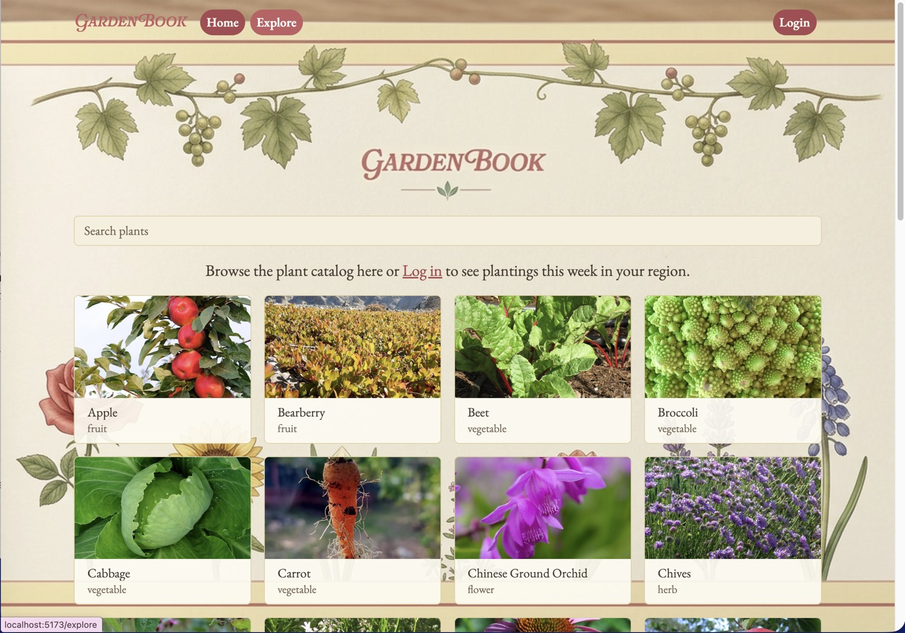
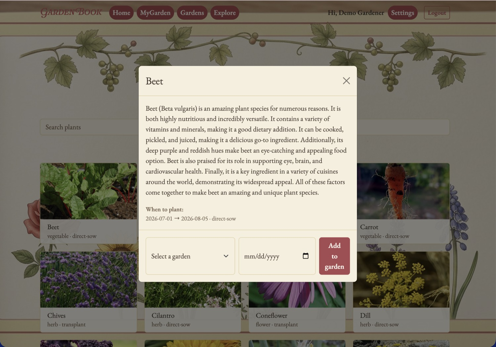
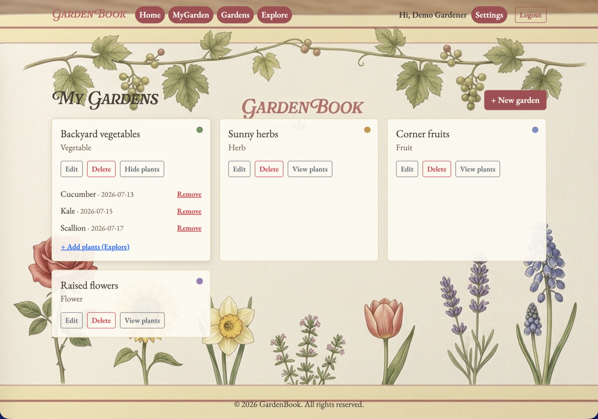
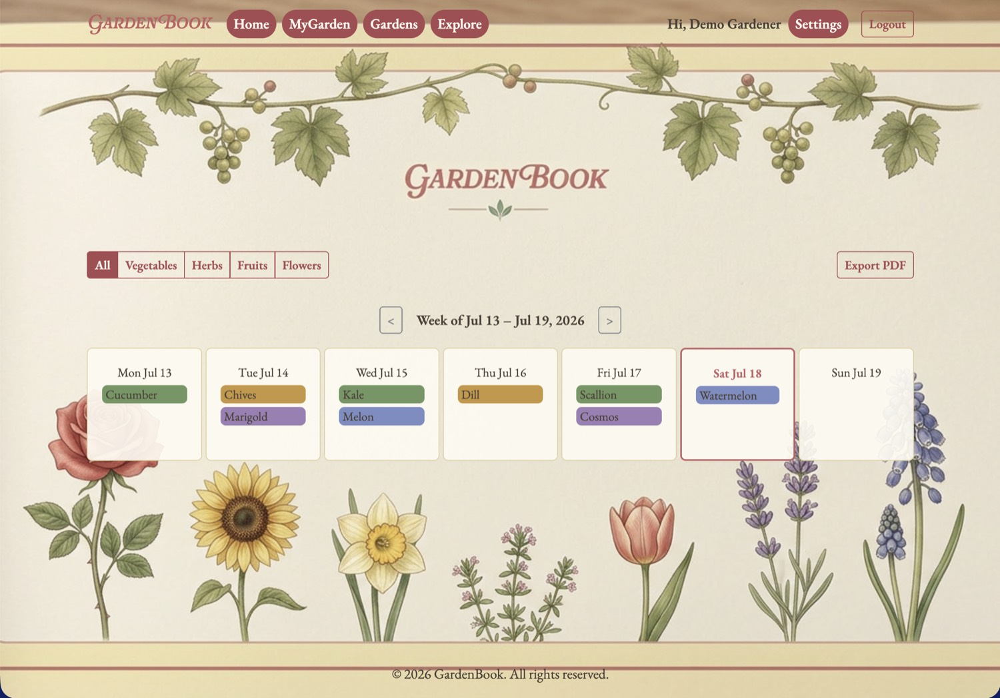

What it is
GardenBook is a full-stack web application that helps gardeners plan what to plant and when to plant it. Anyone can explore plants without an account; signing up adds a region and four gardens — vegetables, fruits, herbs, and flowers — to sort plants into. Choices land on a weekly calendar at their intended planting dates, which can be filtered to one garden type or viewed whole.
My role
Built with a two-person team for CS5610 Web Development at Northeastern, Summer 2026. I owned four areas end to end:
- The plant catalog
- The gardens and the plants saved into them
- The Explore feature
- The calendar views
I also implemented session-based authentication, and collaborated with my teammate on shared component architecture and CSS theming across the app.
Key features
- Explore — every plant that grows in the user's region, sorted by what should go in the ground that week, with past and future weeks a click away
- MyGarden — a weekly calendar of the user's plants on their intended planting dates
- Four garden types — vegetables, fruits, herbs, and flowers — that the calendar can be toggled between or shown all at once
- PDF export of any weekly view, one garden or all of them, to save or print
- Browsing without an account; accounts add a region and gardens
- User accounts with session-based authentication
A look at it





Data sources
Three external REST APIs are combined to drive planting recommendations personalized to a user's location and growing season.
- Perenual — plant catalog and care data
- USDA — hardiness zone lookup
- FarmSense — first and last frost dates
Built with
- React 19 (hooks)
- React Router
- Vite
- React Bootstrap
- Node.js
- Express 5
- MongoDB (native driver)
- Passport (session auth)
- bcrypt
- PDFKit
Try it
The app is deployed and open to try, and the full source is on GitHub. It runs on free hosting, so the first load after a quiet period can take up to a minute to wake up.